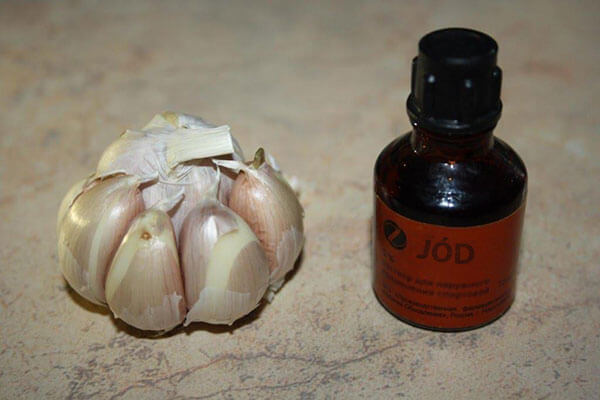

14.204.525— αυτός είναι ο αριθμός των αναζητήσεων στο
θέμα“ της θεραπείας των αρθρώσεων και της σπονδυλικής στήλης” τον οποίο καταχωρούν οι μηχανές
αναζήτησης στο Ελληνικό διαδικτυακό σύστημα μηνιαίως. Δυστυχώς, σήμερα κανείς δεν είναι υπεύθυνος για το
πόσο ασφαλείς και αποτελεσματικές είναι απαντήσεις σε αυτά τα ερωτήματα..
Με την πρωτοβουλία της
Ρωσικής Ένωσης των ορθοπεδικών γιατρών, θα κάνουμε ανάλυση των πιο δημοφιλών στο Διαδίκτυο “τρόπων“ της
θεραπείας των αρθρώσεων και του πόνου στην πλάτη μαζί με τον κορυφαίο ειδικό στον τομέα αυτό.
Ως
αποτέλεσμα, έχουμε εντοπίσει όσο τους πιοεπικίνδυνους και άχρηστους, τόσο και τους πιο
αποτελεσματικούς «τρόπους» για να απαλλαγούμε από παθήσεις του μυοσκελετικού συστήματος.
Και τέτοιοι τρόποι στο Διαδίκτυο είναι πολλοί. Και τους περιγράφουν αυτοί οι άνρωποι οι οποίοι δεν καταλαβαίνουν τίποτα σε ιατρική. Άλλα τους ακολουθούν οι άλλοι – και ως αποτέλεσμα να γίνονται άτομα με ειδικές ανάγκες και να υποφέρουν στη διάρκεια από έντονο πόνο.
Εδώ είναι μερικές φωτογραφίες. Πίσω από την καθεμία από αυτές υπάρχει μια προσωπική τραγωδία που έχει συμβεί λόγω εσφαλμένης θεραπείας των αρθρώσεων.
Η άρθρωση έχει αφαιρεθεί πλήρως, και στη θέση της άρθρωσης τοποθετήθηκε η πρόθεση. Άνθρωπος μπορεί να κινηθεί μόνο με πατερίτσες, και σε πολύ μικρές αποστάσεις. Έγινε ανάπηρος.
Νέκρωση ιστών γύρω σπό την άρθρωση λόγω παραμελημένης φλεγμονής. Αντί της θεραπείας, ο ασθενής επιδείνωσε περαιτέρω την κατάσταση μολύνοντας τη λοίμωξη στο αίμα. Ο ασθενής δεν μπόρεσε να σωθεί - έχει πεθάνει.
Ως αποτέλεσμα της σφαλμένης στιπικής θεραπείας της οροθετικής ρευματοειδούς αρθρίτιδας συνέβη μη αναστρέψιμες μετατοπίσεις των αρθρώσεων. Ασθενής ήχε έντονο πόνο στις αρθρώσεις – και τώρα έγινε πλήρως ανάπηρος. Και είναι μόνο 41 χρονών.
Για να προστατεύσουμε τους ανθρώπους από τέτοια σφαλμένη «θεραπεία» που κάνουν μόνοι τους, ζητήσαμε να σχολιάσει την δικιά του γνώμη για την αποκατάσταση των αρθρώσεων με τον κοινό έναν επαγγελματία γιατρό.Πόσο αποτελεσματικοί είναι και εάν υπάρχει δυνατότητα που μπορούν να βλάψουν την υγεία;»
Και θέλουμε αμέσως να παντήσουμε σε μια πολύ συχνή ερώτηση –εαν είναι δυνατή η αποκατάσταση των αρθρώσεων στο σπίτι Ναι, μπορείτε να το κάνετε! Πώς; Να διαβάσετε πιο κάτω.
Η πρώτη πεντάδα στους σπιτικούς τρόπους της θεραπείας των αρθρώσεων στην Ελλάδα με τα σχόλια του γιατρού
Να σχολιάσει τους πιο κοινούς τρόπους για να απαλλαγούμε από τον πόνο στις αρθρώσεις και στη σπονδυλική στήλη συμφώνησε ο καλεσμένος μας: ορθοπεδικός, της υψηλότερης κατηγορίας γιατρός, καθηγητής, επικεφαλής του Ορθοπεδικού Νοσοκομείου τον Οβσίνικοβ Βλαντιμίρ
Τρόπος №1 - φρούτα Pandanus (λατ. Pandanus.)
Οι γιατροί από την Ασία υποστηρίζουν ότι με τη χρήση των Pandanus, οι αρθρώσεις μπορεί να αποκατασταθούν σε 1,5 μήνα. Ωστόσο, δεν είναι όπως το περιγράφουν και είναι σε θέση τα Pandanus να κάνουν περισσότερο κακό παρά κάτι καλό.
Πλεονεκτήματα:Φυσικότητα, δυνατότητα να χρησιμοποιηθεί το σπίτι
Μειονεκτήματα:Κίνδυνοι για την υγεία, και είναι πολύ δύσκολο να βρεθεί στην Ελλάδα
Γνώμη του γιατρού: Pandan έχει ισχυρές ιδιότητες αγγειοσυσταλτικού. Ως εκ τούτου, όταν χρησιμοποιείται υπάρχει μια βραχυπρόθεσμη επίδραση που συνδέεται με μια μείωση σε επώδυνες αρθρώσεις, ωστόσο, λόγω της στένωσης των αιμοφόρων αγγείων στις αρθρώσεις λιγότερο βούρλα το αίμα, ως αποτέλεσμα, λαμβάνουν λιγότερα θρεπτικά συστατικά οι αθρώσεις, με αποτέλεσμα ναοδηγεί στην αποξήρανση του χόνδρου, Καθώς αναπόφευκτα θα προκαλέσει έντονο πόνο και θα οδηγήσει σε αναπηρία. Συχνές είναι επίσης περιπτώσεις ακρωτηριασμού της αρθρώσης.
Τρόπος №2 – αλοιφή από τον λιλά
Συνταγή από το Διαδίκτυο.Πάρτε τα λουλούδια πασχαλιά, προσεκτικά τα πλένετε και ξηραίνετε, μετά χρειάζεται να γίνουν θρυμματισμένα σε σκόνη, και ρίχνουμε ελαιόλαδο και νέφτι σε αναλογία 1: 1 για τη λήψη μιας πάστας που μοιάζει με συνοχή. Χρήση 2-3 φορές την ημέρα.
Πλεονεκτήματα: Ασφάλεια, φυσικότητα
Μειονεκτήματα:Η χαμηλή απόδοση
Γνώμη του γαιτρού:Λιλάς έχει πραγματικά αναλγητικές και αναζωογονητικές ιδιότητες Ωστόσο οι απαραίτητες ουσίες σε λιλά περιέχονται σε πολύ μικρές ποσότητες. Είναι επομένως απαραίτητη η χρήση ενός ενισχυμένου εκχυλίσματος για τη θεραπεία. Στα φαρμακεία αυτό δεν είναι προς πώληση, και να το μαγειρέψετε μόνοι σας είναι αδύνατο. Η αλοιφή η οποία φτιάχνεται με τη διαδικασία που περιγράφεται στην συνταγή, δεν θα φέρει κανένα αποτέλεσματα, ακόμα και αν το εφαρμόσετε κατά όλη τη ζωή σας.. Σε ορισμένες περιπτώσεις, οι αρθρώσεις θα καταστρέφονται πιο γρήγορα από την αποκατάσταση που γίνεται με μια τέτοια θεραπεία.
Εάν χρησιμοποιείτε τον λιλά συχνά, μπορεί να προκαλέσει τον σχηματισμός των κύστεων στα οστά που αντιμετωπίζονται μόνο με χειρουργική επέμβαση.
Τρόπος №3 – σκόρδο + ιώδιο
Συνταγή από το Διαδίκτυο. Σκόρδο σε 4 σκελίδες προσεκτικά κομματιάζουμε. Ρίχνουμε το ιώδιο και αφήμουνε να εμποτιστεί για 7 ημέρες σε σκοτεινό μέρος και στη συνέχεια να το εφαρμόζουμε στην πάσχουσα άρθρωση όχι περισσότερο από 3 φορές την.
Πλεονεκτήματα:Ασφάλεια, φυσικότητα
Μειονεκτήματα:Χαμηλή απόδοση, πολυπλοκότητα
Γνώμη του γιατρού: Όπως συμβαίνει με λιλά,Η μέθοδος αυτή δεν βοηθά στην αποκατάσταση των αρθρώσεων ή να ανακουφίσει τον πόνο. Και πάλι, το σκόρδο περιέχει τις απαραίτητες ουσίες, αλλάς σε πολύ μικρές ποσότητες και πυκνότητα. Για μια απολεσματική θεραπείο χρειάζονται περισσότερες ποσότητες. Χρειάζονται ενισχυμένα εκχυλίσματα και όχι τσάι ή βάμματα σε γενικές γραμμές. Αυτή είναι ίσως αλήθεια για όλες τις δημοφιλείς συνταγές - «κάπως» βοηθάνε, αλλά πολύ λίγο και μερικές ακόμη είναι επιβλαβείς.
Τρόπος №4 – ιατρικά παρασκευάσματα (φάρμακα)
Διάφορα φάρμακα για τη θεραπεία των αρθρώσεων.
Πλεονεκτήματα:
Μειονεκτήματα: Η υψηλή τιμή αν
χρησιμοποιηθούν ακατάλληλα / εάν χρησιμοπιούνται συχνά, μπορεί να βλάψουν τα εσωτερικά όργανα, ενώ
καλύπτουν ταυτόχρονα τα συμπτώματα
Γνώμη του γαιτρού:Φάρμακα σίγουρα μπορούν να βοηθήσουν με τον πόνο και την περιορισμένη κινητικότητα των αρθρώσεων, όμως, αυτά θα πρέπει να ληφθούν μόνο με ιατρική συνταγή , διαφορετικά λαθεμένη χρήση τους. είναι γεμάτη με πολύ σοβαρές επιπλοκές μέχρι την απώλεια της άρθρωσης. Είναι επίσης σημαντικό να κατανοήσουμε ότι τα φάρμακα είναι για να ανακουφίσουν τον πόνο και άλλα συμπτώματα των ασθενειών ενώ δε τα θεραπεύουν αποτελεσματικά.
Τρόπος №5 – φυσικά μίγματα φυτών (βότανων)
Φυσικά μίγμτα φυτών – ο πιο σύγχρονος τρόπος για την αποκατάσταση των αρθρώσεων.Χάρη στις νέες τεχνολογίες (ειδικότερα, μια ψυχρή έκθλιψη), οι επιστήμονες ήταν σε θέση να πάρουν τα περισσότερα θρεπτικά συστατικά από τα βότανα και τα βάζουν μαζί σε μια ενιαία σύνθεση . Σήμερα υπάρχει μόνο ένα τέτοιο μίγμα, το οποίο έχει αυξημένη αποτελεσματικότητα–
Πλεονεκτήματα:Είναι σε θέση όχι μόνο να ανακουφίζει τον πόνο, αλλά επίσης επαναφέρει πλήρως τις αρθρώσεις, τους αποτρέπει από την περαιτέρω καταστροφή, και είναι κατάλληλο για όλες τις κατηγορίες των ασθενών, ανεξάρτητα από την ηλικία, μέγεθος και τις αιτίες της παθολογίας. Εξάλλου είναι κατάλληλο για την θεραπεία στο σπίτι.
Παραγγελία στην επίσημη ιστοσελίδα με έκπτωση 50%
Μειονεκτήματα: Δεν εντοπίστηκαν
Γνώμη του γιατρού: είναι μακράν το πιο αποτελεσματικό φάρμακο για την αποκατάσταση των αρθρώσεων στο σπίτι. Περιέχει σε υψηλή συγκέντρωση το εκχύλισμα κουρκουμά, εκχυλίσμα ρητίνης boswelia, το MSM, γλυκοζαμίνη, χονδροϊτίνη. Όλες αυτές οι ουσίες βοηθούν από μόνες τους, αλλά σε συνδυασμό απόδοσή τους αυξάνει σχεδόν 15 φορές! είναι αποτελεσματικό τόσο στην καταπολέμηση της φλεγμονής (οίδημα και επώδυνα συμπτώματα στέρησης), τόσο και την σπλήρη αποκατάσταση των αρθρώσεων.
Ειδικότερα, κλινικά διαπίστωσε ότι το βοηθά επίσης σε παθήσεις όπως:
- Οστεοχόνδρωση
- Αρθρίτιδα
- Οστεοαρθρίτιδα
- Coxarthrosis
- Οστεοαρθρωση
- Οστεοπόρωση
- Σπονδυλαρθρίτιδα
- Πολυαρθρίτιδα
- Ασθένεια του Bechterew
- Synoviitis
- Ασθένειες των αρθρώσεων που σχετίζονται με την ηλικία
- Bursit
- Ρευματισμοί
Επίσης μια απτή απόδειξη της αποτελεσματικότητας του είναι ότι στο Ρωσικό Υπουργείο Υγείας το εισήλθε το ομοσπονδιακό πρόγραμμα «Υγεία των αρθρώσεων 2017».
Για να παραγγείλετε το με έκπτωση του 50% είναι απαραίτητο να κάνετε την παραγγελία στην επίσημη ιστοσελίδα Πρέπει να γίνει πριν από το .
Προσοχή Λόγω της μεγάλης δημοφιλίας προς το φάρμακο αυτό καθώς και η τιμή του, ο αριθμός των αιτήσεων αυξάνεται με γεωμετρική πρόοδο, και η ποσότητα του φαρμάκου σε μια αποθήκη τελειώνει πολύ γρήγορα. Έτσι, εάν θέλετε να επαναφέρετε τις αρθρώσεις και να απαλλασετε από τον πόνο. με το , να το παραγγείλετε ενώ είναι ακόμα διαθέσιμο!